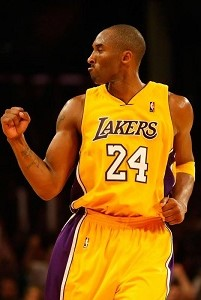
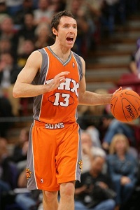
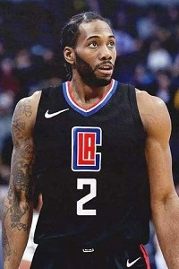
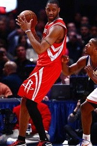
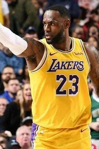
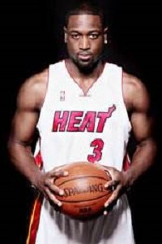
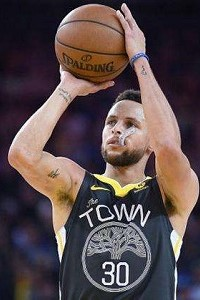
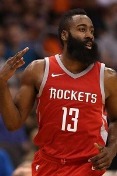
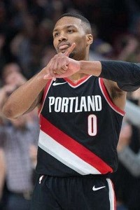

- Kobe Bean Bryant 
- Derrick Rose
- Steve Nash 
- Kawhi Leonard 
- Tracy McGrady 

科比·比恩·布莱恩特（Kobe Bean Bryant，1978年8月23日—2020年1月26日），出生于美国宾夕法尼亚州费城，前美国职业篮球运动员，司职得分后卫/小前锋（锋卫摇摆人），绰号“黑曼巴”/“小飞侠”。
科比是前NBA球员乔·布莱恩特的儿子。在1996年NBA选秀中，科比于第1轮第13位被夏洛特黄蜂队选中，后被交易至洛杉矶湖人队，整个NBA生涯都效力于洛杉矶湖人队。
科比的职业生涯随湖人队5夺NBA总冠军；荣膺1次常规赛MVP，2次总决赛MVP，4次全明星赛MVP；共18次入选NBA全明星阵容，15次入选NBA最佳阵容，12次入选NBA最佳防守阵容。
科比是NBA最好的得分手之一，生涯赢得无数奖项，突破、投篮、罚球、三分球他都驾轻就熟，几乎没有进攻盲区，单场比赛81分的纪录就有力地证明了这一点。除了疯狂的得分外，科比的组织能力也很出众，经常担任球队进攻的第一发起人。另外科比还是联盟中最好的防守人之一，贴身防守很具有压迫性。
2016年4月14日，科比·布莱恩特在生涯最后一场主场对阵爵士的常规赛后宣布退役。2017年12月19日，湖人主场对阵勇士，中场时刻为科比的8号和24号两件球衣举行了退役仪式。2018年3月13日，科比凭借和动画师格兰·基恩合作的短片《亲爱的篮球》获第90届奥斯卡最佳短片奖。
2020年4月5日，科比正式入选奈·史密斯篮球名人纪念堂。
科比前队友、总冠军搭档沙奎尔·奥尼尔在推特上发文称：“没有言语可以形容我此时的痛苦，我正经历着失去我的侄女吉吉和兄弟科比·布莱恩特。我爱你们，会永远想念你们。我向科比及所有遇难人员的家人表示的慰问。我此时非常痛苦。”
科比是前NBA球员乔·布莱恩特的儿子。在1996年NBA选秀中，科比于第1轮第13位被夏洛特黄蜂队选中，后被交易至洛杉矶湖人队，整个NBA生涯都效力于洛杉矶湖人队。
科比的职业生涯随湖人队5夺NBA总冠军；荣膺1次常规赛MVP，2次总决赛MVP，4次全明星赛MVP；共18次入选NBA全明星阵容，15次入选NBA最佳阵容，12次入选NBA最佳防守阵容。
科比是NBA最好的得分手之一，生涯赢得无数奖项，突破、投篮、罚球、三分球他都驾轻就熟，几乎没有进攻盲区，单场比赛81分的纪录就有力地证明了这一点。除了疯狂的得分外，科比的组织能力也很出众，经常担任球队进攻的第一发起人。另外科比还是联盟中最好的防守人之一，贴身防守很具有压迫性。
2016年4月14日，科比·布莱恩特在生涯最后一场主场对阵爵士的常规赛后宣布退役。2017年12月19日，湖人主场对阵勇士，中场时刻为科比的8号和24号两件球衣举行了退役仪式。2018年3月13日，科比凭借和动画师格兰·基恩合作的短片《亲爱的篮球》获第90届奥斯卡最佳短片奖。
2020年4月5日，科比正式入选奈·史密斯篮球名人纪念堂。
科比前队友、总冠军搭档沙奎尔·奥尼尔在推特上发文称：“没有言语可以形容我此时的痛苦，我正经历着失去我的侄女吉吉和兄弟科比·布莱恩特。我爱你们，会永远想念你们。我向科比及所有遇难人员的家人表示的慰问。我此时非常痛苦。”
德里克·罗斯（Derrick Rose），1988年10月4日出生于美国伊利诺伊州芝加哥，美国职业篮球运动员，司职控球后卫，绰号“风城玫瑰”，效力于NBA底特律活塞队。
德里克·罗斯在2008年NBA选秀中于首轮第1顺位被芝加哥公牛队选中，新秀赛季当选NBA年度最佳新秀并夺得NBA全明星技巧挑战赛冠军，2009-10赛季入选NBA全明星替补阵容。2010-11赛季，22岁的罗斯荣膺NBA常规赛最有价值球员（MVP），成为NBA历史上最年轻的MVP，并在该赛季入选NBA最佳阵容一阵和NBA全明星赛首发阵容。2011-12赛季再度入选NBA全明星赛首发阵容。2016年6月23日被交易至纽约尼克斯队，2017年7月25日加盟克利夫兰骑士队，2018年3月9日加盟明尼苏达森林狼队，2019年7月8日加盟底特律活塞队。
2011年，NBA新劳资协议中增加“罗斯条款”，以使符合条件的优秀年轻球员能够更早地获得占据球队工资帽30%的顶薪合同。
直到比赛陷入苦战的时候，你才会发现一名球员的心脏（有多大）和获胜欲望（有多强烈）。当子弹开始穿梭，当比分需要你来改变，当球迷开始声嘶力竭地呐喊，当比赛依然胜负未判，这就是你了解这位年轻人到底怎样的最好时机。而他（罗斯）在这种令人窒息的环境中所做的事情，就是提升自己的比赛水准。他会做一切事情来帮助自己的球队取胜，他不仅仅是站出来得分，他会抢篮板，他会抢断皮球，他会在防守端阻挡对手——送出盖帽，发动快攻，打出一个2+1，投进一个三分。我是在说他的取胜欲望。他还会无私地把所有的注意力留给自己的队友，他并不是想要自己来做孤胆英雄，他想要让队友们也参与进来，这让他变得非常特别。
德里克·罗斯在2008年NBA选秀中于首轮第1顺位被芝加哥公牛队选中，新秀赛季当选NBA年度最佳新秀并夺得NBA全明星技巧挑战赛冠军，2009-10赛季入选NBA全明星替补阵容。2010-11赛季，22岁的罗斯荣膺NBA常规赛最有价值球员（MVP），成为NBA历史上最年轻的MVP，并在该赛季入选NBA最佳阵容一阵和NBA全明星赛首发阵容。2011-12赛季再度入选NBA全明星赛首发阵容。2016年6月23日被交易至纽约尼克斯队，2017年7月25日加盟克利夫兰骑士队，2018年3月9日加盟明尼苏达森林狼队，2019年7月8日加盟底特律活塞队。
2011年，NBA新劳资协议中增加“罗斯条款”，以使符合条件的优秀年轻球员能够更早地获得占据球队工资帽30%的顶薪合同。
直到比赛陷入苦战的时候，你才会发现一名球员的心脏（有多大）和获胜欲望（有多强烈）。当子弹开始穿梭，当比分需要你来改变，当球迷开始声嘶力竭地呐喊，当比赛依然胜负未判，这就是你了解这位年轻人到底怎样的最好时机。而他（罗斯）在这种令人窒息的环境中所做的事情，就是提升自己的比赛水准。他会做一切事情来帮助自己的球队取胜，他不仅仅是站出来得分，他会抢篮板，他会抢断皮球，他会在防守端阻挡对手——送出盖帽，发动快攻，打出一个2+1，投进一个三分。我是在说他的取胜欲望。他还会无私地把所有的注意力留给自己的队友，他并不是想要自己来做孤胆英雄，他想要让队友们也参与进来，这让他变得非常特别。
史蒂夫·纳什（Steve Nash），1974年2月7日出生于南非约翰内斯堡，前加拿大职业篮球运动员，司职控球后卫，绰号“风之子”。
史蒂夫·纳什在1996年NBA选秀中于第1轮第15位被菲尼克斯太阳队选中，1998年加盟达拉斯小牛队，2004年重回太阳队，在2005-06连续2年荣膺NBA常规赛MVP，2012年签约洛杉矶湖人队。8次入选NBA全明星阵容，7次入选NBA最佳阵容（3次一阵，2次二阵，2次三阵），5次荣膺NBA助攻王，2次夺得NBA全明星技巧挑战赛冠军，2007年荣获詹姆斯·沃尔特·肯尼迪公民奖，4次入选“5-4-9俱乐部”（2分球命中率50+%；3分球命中率40+%；罚球命中率90+%）。
2015年3月22日，史蒂夫·纳什正式宣布退役。史蒂夫·纳什是NBA史上第九个拿到MVP的后卫并是后卫中第三个蝉联MVP的人。他也是自奥拉朱旺之后第一位拿到常规赛MVP的国际球员，还是NBA96黄金一代的代表性人物之一。2015年10月31日，太阳为史蒂夫·纳什举办了退役仪式，纳什被授予“荣誉之戒”，与此同时，太阳球员也穿上纳什纪念版球袜，向这位传奇巨星致敬。
2017年6月13日，担任金州勇士队球员发展顾问的史蒂夫·纳什随球队夺得2016-17赛季NBA总冠军。
2018年4月1日，史蒂夫·纳什入选奈·史密斯篮球名人纪念堂。
提到传球就不能不提那令人惊艳的快攻，作为快攻的发起人，纳什出色的攻防转换意识联盟无出其右。当对手还沉浸在进攻得手的喜悦中时，太阳的快攻组合已经完成反击退防，纳什的长传准确地判断快下球员的跑动位置，然后是准确的到位。不需要任何的调整动作，接球者直接灌篮或上篮。有时还能看见斯坦德迈尔和马里昂在快攻时先起跳，在空中等待纳什的传球，然后就是一个血脉贲张的灌篮。
史蒂夫·纳什在1996年NBA选秀中于第1轮第15位被菲尼克斯太阳队选中，1998年加盟达拉斯小牛队，2004年重回太阳队，在2005-06连续2年荣膺NBA常规赛MVP，2012年签约洛杉矶湖人队。8次入选NBA全明星阵容，7次入选NBA最佳阵容（3次一阵，2次二阵，2次三阵），5次荣膺NBA助攻王，2次夺得NBA全明星技巧挑战赛冠军，2007年荣获詹姆斯·沃尔特·肯尼迪公民奖，4次入选“5-4-9俱乐部”（2分球命中率50+%；3分球命中率40+%；罚球命中率90+%）。
2015年3月22日，史蒂夫·纳什正式宣布退役。史蒂夫·纳什是NBA史上第九个拿到MVP的后卫并是后卫中第三个蝉联MVP的人。他也是自奥拉朱旺之后第一位拿到常规赛MVP的国际球员，还是NBA96黄金一代的代表性人物之一。2015年10月31日，太阳为史蒂夫·纳什举办了退役仪式，纳什被授予“荣誉之戒”，与此同时，太阳球员也穿上纳什纪念版球袜，向这位传奇巨星致敬。
2017年6月13日，担任金州勇士队球员发展顾问的史蒂夫·纳什随球队夺得2016-17赛季NBA总冠军。
2018年4月1日，史蒂夫·纳什入选奈·史密斯篮球名人纪念堂。
提到传球就不能不提那令人惊艳的快攻，作为快攻的发起人，纳什出色的攻防转换意识联盟无出其右。当对手还沉浸在进攻得手的喜悦中时，太阳的快攻组合已经完成反击退防，纳什的长传准确地判断快下球员的跑动位置，然后是准确的到位。不需要任何的调整动作，接球者直接灌篮或上篮。有时还能看见斯坦德迈尔和马里昂在快攻时先起跳，在空中等待纳什的传球，然后就是一个血脉贲张的灌篮。
科怀·伦纳德（Kawhi Leonard），1991年6月29日出生于美国加利福尼亚州河边市，美国职业篮球运动员，司职小前锋，效力于NBA洛杉矶快船队。
2011年NBA选秀，科怀·伦纳德在首轮第15位被印第安纳步行者队选中，随即被交易至圣安东尼奥马刺队。职业生涯先后效力于马刺队、猛龙队以及快船队。2011-12赛季入选最佳新秀阵容第一阵容；2013-14赛季入选最佳防守阵容第二阵容，随马刺队夺得NBA总冠军并荣膺总决赛最有价值球员；2014-15赛季当选最佳防守球员并入选最佳防守阵容第一阵容；2015-16赛季入选全明星西部首发阵容、最佳阵容第一阵容，蝉联最佳防守球员并全票入选最佳防守阵容第一阵容；2016-17赛季入选全明星西部首发阵容、最佳阵容第一阵容和最佳防守阵容第一阵容；2018-19赛季入选全明星东部首发阵容、最佳阵容第二阵容和最佳防守阵容第二阵容，带领猛龙队夺得NBA总冠军并荣膺总决赛最有价值球员；2019-20赛季入选全明星西部首发阵容并荣获“科比·布莱恩特MVP奖”（全明星MVP奖）。
科怀·伦纳德可能是现在联盟中最好的攻防兼备的球员，你要在很多不同的地方去应对他。他的防守很恐怖，在进攻上也越来越好。他的三分投射能力真的非常非常好。他非常强，可以在篮筐附近投篮，还能为队友制造机会。他是一名非常出色的球员，在很多方面，马刺正逐渐成为他的球队，这是肯定的。
科怀·伦纳德可能是现在联盟中最好的攻防兼备的球员，你要在很多不同的地方去应对他。他的防守很恐怖，在进攻上也越来越好。他的三分投射能力真的非常非常好。他非常强，可以在篮筐附近投篮，还能为队友制造机会。他是一名非常出色的球员，在很多方面，马刺正逐渐成为他的球队，这是肯定的。
特雷西·麦克格雷迪（Tracy McGrady），简称“麦迪/麦蒂”，1979年5月24日出生于美国佛罗里达州巴托，前美国职业篮球运动员，司职得分后卫/小前锋，绰号“T-Mac”。
在1997年NBA选秀大会中，麦迪以高中生球员的身份，在第1轮第9顺位被多伦多猛龙队选中。职业生涯曾先后效力于多伦多猛龙队、奥兰多魔术队、休斯敦火箭队、纽约尼克斯队、底特律活塞队、亚特兰大老鹰队、CBA青岛双星队及圣安东尼奥马刺队。在16年的职业生涯中，麦克格雷迪2次荣膺NBA得分王，7次入选NBA全明星阵容，2次入选NBA最佳阵容一阵，3次入选NBA最佳阵容二阵，2次入选NBA最佳阵容三阵，2001年荣获NBA进步最快球员奖。
2013年8月26日，麦克格雷迪正式宣布退役。2017年4月2日，麦克格雷迪正式入选2017年奈·史密斯篮球名人纪念堂。
麦克格雷迪是一个拥有辉煌过去的明星球员。他两度荣膺联盟得分王，也有过属于自己的35秒13分神迹。可以说，正因为他的惊艳表现，才让人们对他有着这么高的期待，继而由于落差而感到同样巨大的落差。作为以前和科比相提并论的天才球员，在很多人眼中，麦克格雷迪的天赋甚至可以与“篮球之神”乔丹媲美。总结麦克格雷迪的生涯，从球队荣誉方面去看，他并不成功，但就个人而言，他足够光彩。
在1997年NBA选秀大会中，麦迪以高中生球员的身份，在第1轮第9顺位被多伦多猛龙队选中。职业生涯曾先后效力于多伦多猛龙队、奥兰多魔术队、休斯敦火箭队、纽约尼克斯队、底特律活塞队、亚特兰大老鹰队、CBA青岛双星队及圣安东尼奥马刺队。在16年的职业生涯中，麦克格雷迪2次荣膺NBA得分王，7次入选NBA全明星阵容，2次入选NBA最佳阵容一阵，3次入选NBA最佳阵容二阵，2次入选NBA最佳阵容三阵，2001年荣获NBA进步最快球员奖。
2013年8月26日，麦克格雷迪正式宣布退役。2017年4月2日，麦克格雷迪正式入选2017年奈·史密斯篮球名人纪念堂。
麦克格雷迪是一个拥有辉煌过去的明星球员。他两度荣膺联盟得分王，也有过属于自己的35秒13分神迹。可以说，正因为他的惊艳表现，才让人们对他有着这么高的期待，继而由于落差而感到同样巨大的落差。作为以前和科比相提并论的天才球员，在很多人眼中，麦克格雷迪的天赋甚至可以与“篮球之神”乔丹媲美。总结麦克格雷迪的生涯，从球队荣誉方面去看，他并不成功，但就个人而言，他足够光彩。
勒布朗·詹姆斯（LeBron James），1984年12月30日出生于美国俄亥俄州阿克伦（Akron, Ohio），美国职业篮球运动员，司职小前锋，绰号“小皇帝”，效力于NBA洛杉矶湖人队。
詹姆斯在2003年NBA选秀中于首轮第1顺位被克利夫兰骑士队选中，在2009年与2010年蝉联NBA常规赛最有价值球员（MVP）。2010年，詹姆斯转会至迈阿密热火队。2012年，詹姆斯得到NBA个人生涯的第3座常规赛MVP，第1个总冠军和总决赛MVP，并代表美国男篮获得了伦敦奥运会金牌，追平了迈克尔·乔丹在1992年所创的纪录。2013年，詹姆斯获得第4个常规赛MVP、第2个NBA总冠军和第2个总决赛MVP，实现两连冠。2014年，詹姆斯回归骑士。2016年，詹姆斯带领骑士逆转战胜卫冕冠军勇士获得队史首个总冠军和个人第3个总决赛MVP。2018年7月10日，詹姆斯正式与湖人签下4年1.53亿美元的合同。
詹姆斯篮球智商极高、突破犀利，拥有出色的视野和传球技术，被认为是NBA有史以来最为全能的球员之一。2019年福布斯100名人榜，詹姆斯排名第17位。
进入NBA已经转眼接近15年了，但是令人佩服的是，詹姆斯在接近34的年纪，依然充满斗志，今夏来到湖人目标是带领湖人夺冠，这是詹姆斯给自己34岁的时候接下的挑战，本赛季詹姆斯到湖人后依然保持着场均28.8分+6.9次助攻+7个篮板的巨星级别的数据，前不久刚刚进入NBA历史得分榜第五，又接连砍下40+以上的得分，詹姆斯的伟大真的不是用一句话可以概括的。
詹姆斯在2003年NBA选秀中于首轮第1顺位被克利夫兰骑士队选中，在2009年与2010年蝉联NBA常规赛最有价值球员（MVP）。2010年，詹姆斯转会至迈阿密热火队。2012年，詹姆斯得到NBA个人生涯的第3座常规赛MVP，第1个总冠军和总决赛MVP，并代表美国男篮获得了伦敦奥运会金牌，追平了迈克尔·乔丹在1992年所创的纪录。2013年，詹姆斯获得第4个常规赛MVP、第2个NBA总冠军和第2个总决赛MVP，实现两连冠。2014年，詹姆斯回归骑士。2016年，詹姆斯带领骑士逆转战胜卫冕冠军勇士获得队史首个总冠军和个人第3个总决赛MVP。2018年7月10日，詹姆斯正式与湖人签下4年1.53亿美元的合同。
詹姆斯篮球智商极高、突破犀利，拥有出色的视野和传球技术，被认为是NBA有史以来最为全能的球员之一。2019年福布斯100名人榜，詹姆斯排名第17位。
进入NBA已经转眼接近15年了，但是令人佩服的是，詹姆斯在接近34的年纪，依然充满斗志，今夏来到湖人目标是带领湖人夺冠，这是詹姆斯给自己34岁的时候接下的挑战，本赛季詹姆斯到湖人后依然保持着场均28.8分+6.9次助攻+7个篮板的巨星级别的数据，前不久刚刚进入NBA历史得分榜第五，又接连砍下40+以上的得分，詹姆斯的伟大真的不是用一句话可以概括的。
德怀恩·韦德（Dwyane Wade），1982年1月17日出生于美国伊利诺伊州芝加哥，前美国职业篮球运动员，司职得分后卫，绰号“闪电侠”（The Flash）。
德怀恩·韦德在2003年NBA选秀中于首轮第五顺位被迈阿密热火队选中，从而进入NBA。2006年，韦德夺得生涯第一座NBA总冠军，并且荣膺NBA历史上第五年轻总决赛MVP（FMVP）。2008年，韦德代表美国男篮夺得北京奥运会金牌。2011-14年间，韦德帮助热火队四次进入NBA总决赛，并在中间在2012-13年2个赛季取得连冠。职业生涯在2005-16年连续12次入选NBA全明星阵容并在2010年荣膺NBA全明星MVP，8次入选NBA最佳阵容（2次一阵，3次二阵，3次三阵），3次入选NBA最佳防守阵容二阵，2009年荣膺NBA得分王，2006-07年连续2次夺得NBA全明星技巧挑战赛冠军，2018-19赛季第13次入选NBA全明星阵容。
2017年9月27日，韦德与克利夫兰骑士队达成一份1年230万美元的合同协议。2018年2月9日，韦德重返热火队。2019年4月11日，韦德在完成职业生涯的最后一场比赛后宣布退役。2020年2月23日，热火队为韦德举办了3号球衣退役仪式。
德怀恩·韦德擅长欧洲步（迷踪步），突破犀利，喜欢背身单打，年轻时是NBA联盟中运球过人速度最快的球员之一。
德怀恩·韦德在2003年NBA选秀中于首轮第五顺位被迈阿密热火队选中，从而进入NBA。2006年，韦德夺得生涯第一座NBA总冠军，并且荣膺NBA历史上第五年轻总决赛MVP（FMVP）。2008年，韦德代表美国男篮夺得北京奥运会金牌。2011-14年间，韦德帮助热火队四次进入NBA总决赛，并在中间在2012-13年2个赛季取得连冠。职业生涯在2005-16年连续12次入选NBA全明星阵容并在2010年荣膺NBA全明星MVP，8次入选NBA最佳阵容（2次一阵，3次二阵，3次三阵），3次入选NBA最佳防守阵容二阵，2009年荣膺NBA得分王，2006-07年连续2次夺得NBA全明星技巧挑战赛冠军，2018-19赛季第13次入选NBA全明星阵容。
2017年9月27日，韦德与克利夫兰骑士队达成一份1年230万美元的合同协议。2018年2月9日，韦德重返热火队。2019年4月11日，韦德在完成职业生涯的最后一场比赛后宣布退役。2020年2月23日，热火队为韦德举办了3号球衣退役仪式。
德怀恩·韦德擅长欧洲步（迷踪步），突破犀利，喜欢背身单打，年轻时是NBA联盟中运球过人速度最快的球员之一。
斯蒂芬·库里（Stephen Curry），1988年3月14日出生于美国俄亥俄州阿克伦（Akron,Ohio），美国职业篮球运动员，司职控球后卫，效力于NBA金州勇士队。
斯蒂芬·库里于2009年通过选秀进入NBA后一直效力于勇士队，新秀赛季入选最佳新秀第一阵容；2014-15、2016-17、2017-18赛季三次夺得NBA总冠军；两次荣膺常规赛MVP，6次入选最佳阵容（3次一阵、2次二阵、1次三阵），6次入选全明星赛西部首发阵容。
斯蒂芬·库里于2010年随美国队获土耳其世锦赛冠军，2014年随美国队获西班牙篮球世界杯冠军。2019福布斯100名人榜排名第23位。
斯蒂芬·库里擅长运球急停跳投，投篮可以覆盖整个半场。控球出色，可以在一对一通过控球找到出手机会，大量三分来自干拔。由于身体单薄，库里并不容易进入到禁区，打法缺少侵略性。库里并不是真正的传统控卫，但他投射威慑力太大，很容易吸引对手防守夹击，库里创造队友得分机会能力很强。但库里也容易失误，有时会冒险传球。防守端，库里因身体太瘦弱，需要保护，但库里速度很快，出手迅捷，防守效果不错。
斯蒂芬·库里于2009年通过选秀进入NBA后一直效力于勇士队，新秀赛季入选最佳新秀第一阵容；2014-15、2016-17、2017-18赛季三次夺得NBA总冠军；两次荣膺常规赛MVP，6次入选最佳阵容（3次一阵、2次二阵、1次三阵），6次入选全明星赛西部首发阵容。
斯蒂芬·库里于2010年随美国队获土耳其世锦赛冠军，2014年随美国队获西班牙篮球世界杯冠军。2019福布斯100名人榜排名第23位。
斯蒂芬·库里擅长运球急停跳投，投篮可以覆盖整个半场。控球出色，可以在一对一通过控球找到出手机会，大量三分来自干拔。由于身体单薄，库里并不容易进入到禁区，打法缺少侵略性。库里并不是真正的传统控卫，但他投射威慑力太大，很容易吸引对手防守夹击，库里创造队友得分机会能力很强。但库里也容易失误，有时会冒险传球。防守端，库里因身体太瘦弱，需要保护，但库里速度很快，出手迅捷，防守效果不错。
詹姆斯·哈登（James Harden），1989年8月26日出生于美国加利福尼亚州洛杉矶（Los Angeles, California），美国职业篮球运动员，司职后卫，效力于NBA休斯顿火箭队。
詹姆斯·哈登于2009年通过选秀进入NBA，先后效力于雷霆队和火箭队，新秀赛季入选最佳新秀第二阵容，2011-12赛季当选最佳第六人，2012-13赛季入选最佳阵容第三阵容，5次入选最佳阵容第一阵容，8次入选全明星阵容，2017-18赛季荣膺常规赛MVP，2次荣膺NBA得分王，1次荣膺NBA助攻王。
詹姆斯·哈登于2012年随美国男篮获伦敦奥运会金牌，2014年随美国队获西班牙篮球世界杯冠军。2019福布斯100名人榜，詹姆斯·哈登排名第64位。
詹姆斯·哈登身体强壮，脚步灵活善于突破，喜欢用后撤步跳投而非后仰。整体看哈登是不错的投手，在中距离的跳投表现一般。哈登最强势的是突破，他拥有马努·吉诺比利之外最好的欧洲步，能在对抗中完成出手，又能聪明的制造身体接触，在突破时主动接触对手以获得哨声。哈登在防守无球有球时会走神，让对手很轻松空切上篮。哈登在精力集中时能做好有球防守，擅长在对手突破过程中掏球抢断。
詹姆斯·哈登一直在为球队组织进攻，而对于他自己，他只需在场上做一个真正的领袖，他是一名MVP候选人。
詹姆斯·哈登于2009年通过选秀进入NBA，先后效力于雷霆队和火箭队，新秀赛季入选最佳新秀第二阵容，2011-12赛季当选最佳第六人，2012-13赛季入选最佳阵容第三阵容，5次入选最佳阵容第一阵容，8次入选全明星阵容，2017-18赛季荣膺常规赛MVP，2次荣膺NBA得分王，1次荣膺NBA助攻王。
詹姆斯·哈登于2012年随美国男篮获伦敦奥运会金牌，2014年随美国队获西班牙篮球世界杯冠军。2019福布斯100名人榜，詹姆斯·哈登排名第64位。
詹姆斯·哈登身体强壮，脚步灵活善于突破，喜欢用后撤步跳投而非后仰。整体看哈登是不错的投手，在中距离的跳投表现一般。哈登最强势的是突破，他拥有马努·吉诺比利之外最好的欧洲步，能在对抗中完成出手，又能聪明的制造身体接触，在突破时主动接触对手以获得哨声。哈登在防守无球有球时会走神，让对手很轻松空切上篮。哈登在精力集中时能做好有球防守，擅长在对手突破过程中掏球抢断。
詹姆斯·哈登一直在为球队组织进攻，而对于他自己，他只需在场上做一个真正的领袖，他是一名MVP候选人。
达米恩·利拉德（Damian Lillard，1990年7月15日- ），出生于加利福尼亚州奥克兰，美国男子篮球运动员，司职控球后卫，现效力于NBA波特兰开拓者队，被球迷亲切称为“利指导”。
利拉德身体和技术很好，控球、传球和中远投都值得信赖，突破分球是他的杀招，还有一颗大心脏，多次在比赛中上演绝杀好戏。他2012年通过选秀进入NBA，新秀赛季当选最佳新秀并入选最佳新秀第一阵容，职业生涯5次入选NBA全明星阵 容，2次入选最佳阵容二阵，2次夺得全明星技巧挑战赛冠军
达米恩·利拉德身体条件不错，强壮的身板打组织后卫有优势，臂展不俗，速度属于优秀的水准，在快攻中冲击力十足；控球技术很好，中远投基本功过硬，传球值得信赖，突破分球是他的杀招。
这位拥有冷血杀手本色的年轻后卫似乎专为大场面而生，虽然进入联盟仅仅两年时间，利拉德已经展现出成为一名领袖球员的能力与气质。
利拉德身体和技术很好，控球、传球和中远投都值得信赖，突破分球是他的杀招，还有一颗大心脏，多次在比赛中上演绝杀好戏。他2012年通过选秀进入NBA，新秀赛季当选最佳新秀并入选最佳新秀第一阵容，职业生涯5次入选NBA全明星阵 容，2次入选最佳阵容二阵，2次夺得全明星技巧挑战赛冠军
达米恩·利拉德身体条件不错，强壮的身板打组织后卫有优势，臂展不俗，速度属于优秀的水准，在快攻中冲击力十足；控球技术很好，中远投基本功过硬，传球值得信赖，突破分球是他的杀招。
这位拥有冷血杀手本色的年轻后卫似乎专为大场面而生，虽然进入联盟仅仅两年时间，利拉德已经展现出成为一名领袖球员的能力与气质。
- LeBron James 
- Dwyane Wade 
- Stephen Curry 
- James Harden 
- Damian Lillard 